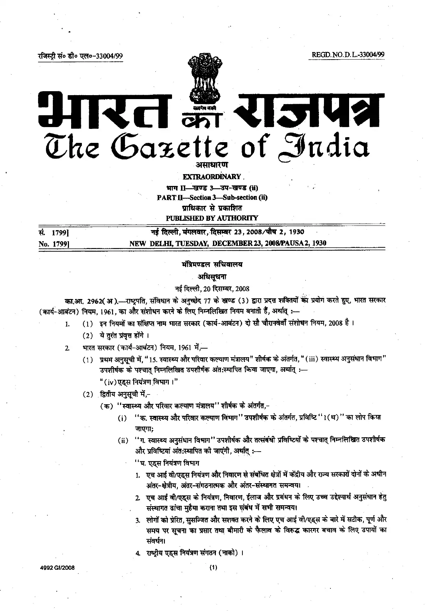
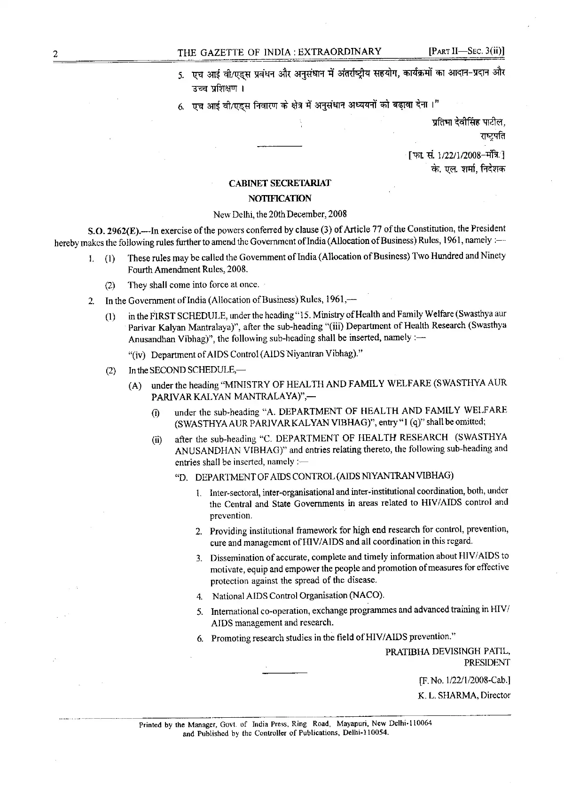

Amendment #294 (S.O. 2962(E), 2008)
3 changes: 1 to the First Schedule, 2 to the Second Schedule. 3 applied
The order, page by page
Page 1 of 2

Page 2 of 2

123after Schedule 1 › Ministry of Health and Family Welfare › Department of Health Research
- iv. Department of AIDS Control
applied at schedule 1 › ministry 15 › department iv in the Rules after #294
Schedule 2 › MINISTRY OF HEALTH AND FAMILY WELFARE › DEPARTMENT OF HEALTH AND FAMILY WELFARE › entry 1 › item q
applied at schedule 2 › ministry MINISTRY OF HEALTH AND FAMILY WELFARE › department A › group_heading I › entry 1 › item q in the Rules after #294
after Schedule 2 › MINISTRY OF HEALTH AND FAMILY WELFARE › DEPARTMENT OF HEALTH RESEARCH
- D. DEPARTMENT OF AIDS CONTROL
- 1. Inter-sectoral, inter-organisational and inter-institutional coordination, both, under the Central and State Governments in areas related to HIV/AIDS control and prevention.
- 2. Providing institutional framework for high end research for control, prevention cure and management of HIV/AIDS and all coordination in this regard.
- 3. Dissemination of accurate, complete and timely information about HIV/AIDS to motivate, equip and empower the people and promotion of measures for effective protection against the spread of the disease.
- 4. National AIDS Control Organisation (NACO).
- 5. International co-operation, exchange programmes and advanced training in HIV/ AIDS management and research.
and 1 more
- 6. Promoting research studies in the field of HIV/AIDS prevention.
applied at schedule 2 › ministry MINISTRY OF HEALTH AND FAMILY WELFARE › department D in the Rules after #294
How this document was read
From the Government of India (Allocation of Business) Rules, 1961 and their amendments, as published by the Cabinet Secretariat (cabsec.gov.in), read by orgpedia. The readings of the older scanned gazettes have known gaps.